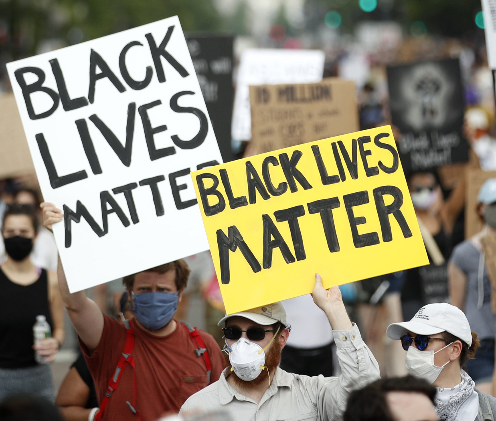

Five Largest Protests in U.S. History

The tradition of protests that demand progressive change in the United States continue.
Here are the country's five of the top protests in term of attendance:
- George Floyd protests nationwide in 2020 with an estimated 20 million protesters.
- Women's March in 2017 drew about 5.6 million people nationwide.
- March for Our Lives a student-run protest in 2018 against gun violenc, drew about 2 million people.
- March on Washington for Lesbian, Gay, and Bi Equals Rights and Liberation drew about 1 million people in 1993.